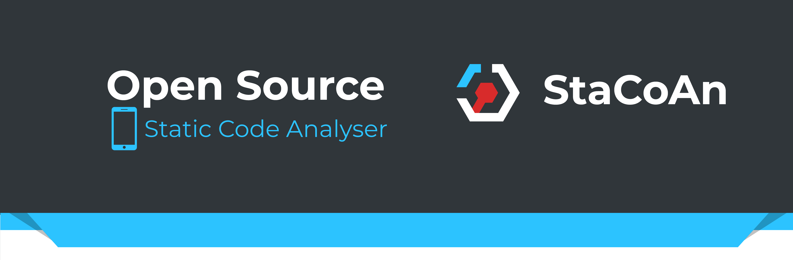
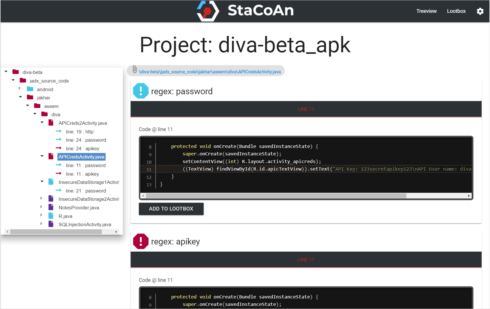
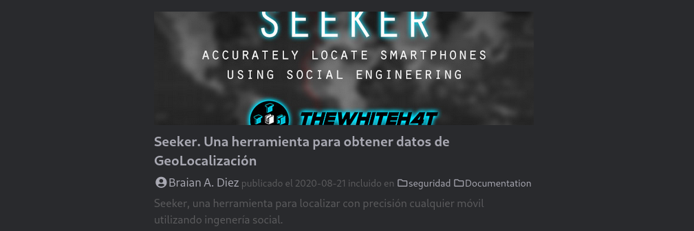
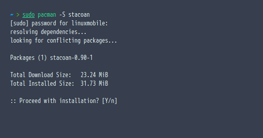
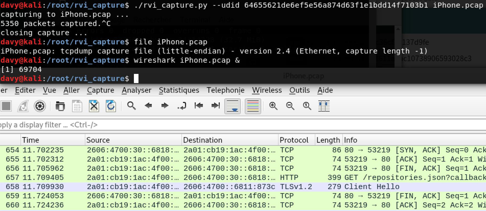
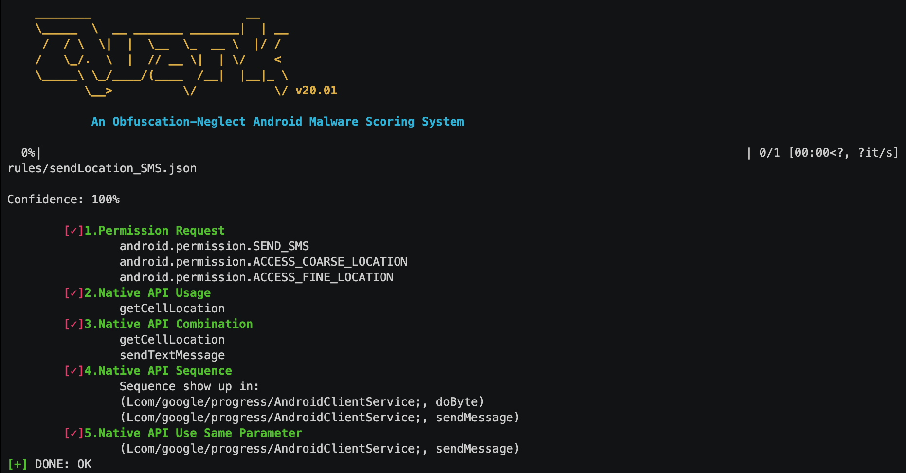

Parte 1
Las mejores herramientas de Pen Tensting que se pueden encontrar en BlackArch para penetrar un móvil.Intro
Bueno, hoy tenía ganas de subir algo más sobre Pen Testing y seguridad informática. Explorando un poco la enorme cantidad de herramientas de BlackArch traté de elegir las mejores.
StaCoAn
StaCoAn es una herramienta multiplataforma que ayuda a desarrolladores, cazarrecompensas de errores y hackers a realizar
análisis estáticos de aplicaciones móviles en el código de la aplicación para aplicaciones nativas de Android e iOS.

Esta herramienta buscará líneas en el código que pueden contener:
- Credenciales codificadas.
- Claves API.
- URL de API.
- Claves de Cifrado.
- Errores importantes en la codificación.
Caracteristicas
El concepto de StaCoAn es muy sencillo, la “app” incluso te brinda una interfaz gráfica, y la posibilidad de arrastrar y soltar el .apk. Siendo de esta manera muy fácil de manejar el programa.
Basta con iniciar a través de la terminal el programa, ir al navegador, arrastrar el .apk, soltarlo y ya estarías teniendo un breve analisis de la app.
Los informes incluso contienen un práctico visor de árbol para que puedas navegar muy fácilmente a través de la app decompilada

El listado completo de caracteristicas se puede encontrar muy fácil en su repositorio de Github
Instalar
En nuestro post Seeker explicamos como acceder a los repositorios de BlackArch.

Por lo tanto para instalar solo basta con un simple comando
|
|

Para utilizarlo, exactamente como hicimos con Seeker
|
|
SigPloit
SigPloit es una herramienta que te permite testear las señales Telecom y explorar las vulnerabilidades in los protocolos de señalización que utilizan los operadores móviles.
Algunas de las caracteristicas de SigPloit son:
- Seguimiento de localización.
- Interceptar SMS y llamadas.
Para ver más sobre esta hermosa herramienta de Pen Testing les recomiendo seguir su Github.
|
|
rvi_capture (rvictl)

rvictl es una herramienta excelente que sirve para capturar paquetes que entran y salen de dispositivos, tanto Android como iOS.
Esta herramienta puede ser un arma excelente para capturar todos los datos que se envían y reciben a través de la red, utilizada junto con Wireshark.
Quark

El concepto de Quark funciona como un motor de análisis de malware en Android.
Quark desarrolló cinco etapas para comprobar si una app está practicando actividad maliciosa en el dispositivo.
- Permisos solicitados.
- Llamada de API nativa.
- Combinaciones de la API nativa.
- Secuencia de llamada de API nativa.
- API que manejan el mismo registro.
Les dejo un breve video de como funciona.

Para encontrar más info, como ya dije antes, dejo su link de Github
Para instalar solo con el comando:
|
|